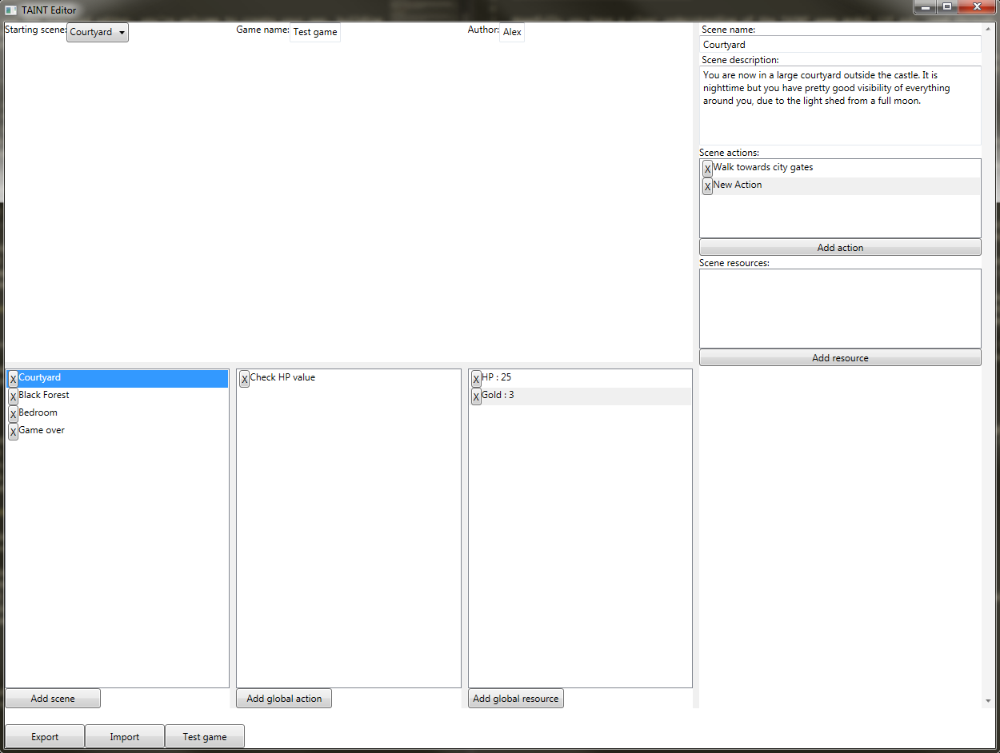

Hopefully you have a clear understanding of the TAINT game model (if not, read through What is a TAINT game?) and you are ready to start creating your own games!
The great thing is that if you understand the game model, following the instructions in this section should allow you to flesh out your ideas easily, with no programming effort required, only point and click. Let’s get started!
The editor has only one view, which can be seen in the image above. The editor in general follows a master-details layout. The column on the right is the details view while everything on its left is the master view. From the master view you can select individual components that you want to examine or edit. You then perform the editing from the details view.
At the very top, you can set the game’s starting scene (using the dropdown box to select one of the available scenes), the game’s name and the author’s name. In this case we just set them to ‘Test game’ and ‘Alex’, while the starting scene is the Courtyard.
Below these, you can see three lists. The left-most list is a list of all the game’s scenes. To add a new scene simply press the ‘Add scene’ button below that. To delete a scene simply press on the ‘X’ which can be found next to the specific scene’s name.
The list in the middle is a list of all the game’s global action. In the image above you can see a passive action which checks every round to see whether the player’s HP has dropped to 0 or below. To add a new global action, simply press on the ‘Add global action’ button below the list. To delete a global action press on the ‘X’ which can be found next to the specific global action’s name.
The third list, the right-most one, contains the game’s global resources. Similarly to the other two lists, to add a new global resource press the ‘Add global resource’ button below the list. To delete a glocal resource press on the ‘X’ which can be found next to the specific global resource’s name.
Whenever you select something in the master view, be it a scene, a global action or a global resource, you will see the detail view change to display the properties of that specific element. For example, if we select the HP global resource, the details view is updated to display the resource information, as seen below.
Similarly, looking at the image below, you can see that when the Courtyard scene is selected, the details view on the right is populated with all the scene information.
It is important to note that the scene also contains a list of actions and a list of resources, also known as local actions and local resources. While when you select an element from the master view -such as a scene or a resource- only that is displayed in the details view, when selecting a scene’s local element it will be displayed directly below the scene information, as seen in the image below.
To export the game simply press the ‘Export’ button found at the very bottom left of the program. It will create an XML file with all the information so far.
To test a game, press the ‘Test game’ button found near the ‘Export button’. When you do that, a new XML file is created (therefore overwriting any other exports) and then loaded in the TAINT python interpreter, as seen in the image below.
In this tutorial we will create a very simple game called ‘Escape from the troll cave’. Let’s start with a clean slate!
First of all, set the game name and author name by editing the corresponding fields at the top of the program. Type in ‘Escape from the troll cave’ in the game name field, and type your name in the author field.
First of all, for our game we want two global resources: the player’s hitpoints and the player’s mana. Both will be of Number type. So click twice on the ‘Add global resource’ button to create two new global resources. Select the first one, and notice how the details view changed. Edit the resource name and change it to ‘HP’, and for the value select a Number type and type in 20. Now we have a global resource HP with a value of 20, representing the player’s 20 hitpoints.
Similarly for the second global resource we created, change it to ‘MP’ and a Number value of 5. This represents the player’s 5 starting mana points.
Now click on the ‘Add scene’ button, to create a new scene. Notice that the starting scene field at the top is now set to this new scene. Click on the ‘Add scene’ button again, to create a second scene. Select the first scene created, named ‘New Scene’ and notice the change in the details view.
Change its name to ‘Forest’ and type in for the description ‘You have successfully escaped from the cave! You now find yourself in a forest.’.
Now select the other scene from the list, called ‘New Scene (1)’. From the details view, change its name to ‘Cave’ and its description to ‘You are in a dark cave. The stench of troll is all over and you know you have to leave this place as soon as possible. You see a door in front of you which must be the exit.’.
It’s time to create some actions for the player, in order to make our story interactive! Press on the ‘Add action’ button found below the scene’s list of actions (so far empty). A new action should be added to the list; select it and notice how its properties are displayed underneath.
Change the action’s name to ‘Open the door’ and click on the ‘Add effect’ button below the ‘Action effects if True’ section twice, to add two effects. If we wanted the door to be locked, we could add some conditions and make it more complicated, however for this simple example let’s assume the door is unlocked.
Select the first effect (the one at the top of the list) and click on the drop-down box to select one of the predefined effect functions. Note that you can edit these to create your own effect functions (How to extend TAINT with custom functions?). Select ‘Tell player’ and as a Text argument, type in ‘You open the door and feel a light breeze in your face. The exit is near. You walk for a bit longer and find yourself out of the cave.’ in the available editbox.
Now select the second effect and click on the drop-down box to select ‘Go to scene’. As the Scene argument, select the Forest scene.
Finally, from the top of the program, change the starting scene to be the Cave scene. That’s it! You have created your first text adventure, all you need to do now is press ‘Test game’ and see the results for yourself! Congratulations!
Nonetheless, you are free to do so as long as you understand the different XML tags explained in the How is a game stored? section.
{kind=link}
{kind=link}
{kind=link}
{kind=link}
{kind=link}
{kind=link}
{kind=link}
{kind=link}
{kind=link}
{kind=link}
{kind=link}